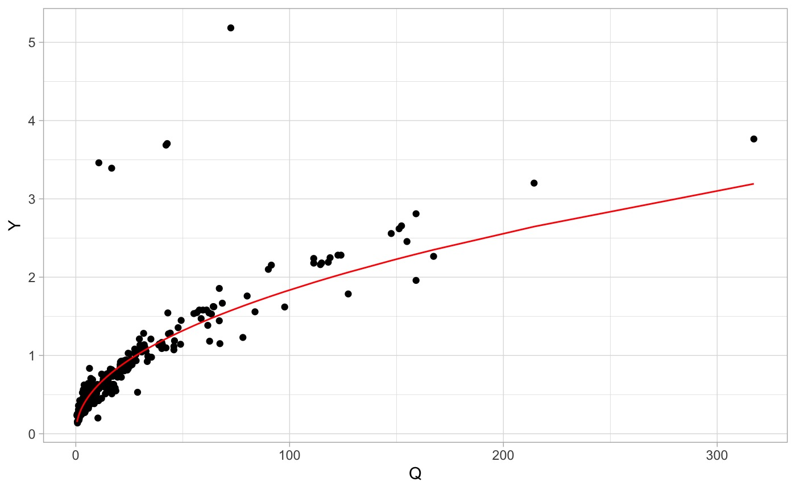
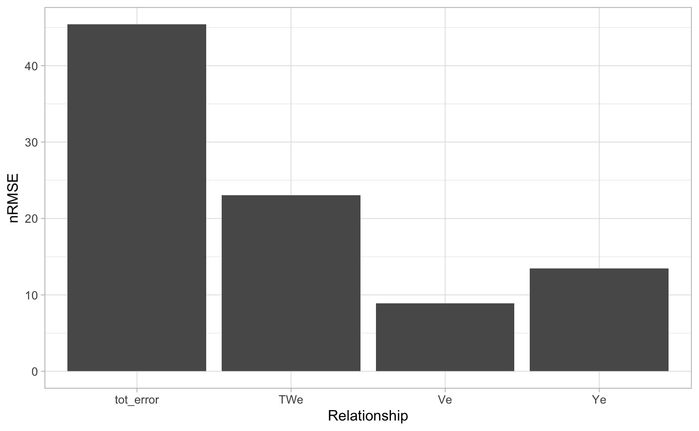

Traditional AHG fitting
Mike Johnson
Lynker, NOAA-AffilateSource:
vignettes/traditonal-ahg.Rmd
traditonal-ahg.RmdThe AHG relationships
The idea of hydraulic geometry was introduced by Leopold and Maddock (1953) and the concept of ‘at-a-station hydraulic geometry’ (AHG) provides three power laws that relate water-surface width (TW), average depth (Y), and average velocity (V) to the stream flow (Q) in a given river cross section:
\[ TW = a *Q^b \] \[ Y = c*Q^f \] \[ V = k*Q^m \]
A set of AHG relations applies to within-bank flows at a specific cross section and assumes the channel characteristics do not change sensibly with discharge. Under these assumptions, continuity dictates that no water is gained or lost in the system such that:
\[ Q = TW·Y·V \]
and therefore:
\[ b + f + m = a·c·k = 1 \]
In practice, the enforcement of continuity is determined by the quality of the data, and is not enforced in the estimation of the AHG relationships.
Traditonal Fitting Technique
While the AHG power laws provide an elegant theory for representing a mass-constrained hydraulic system, the data available to determine these relations are rarely as clean. In most cases, hydraulic data is reported as a table(s) relating values of Q to values of one or more hydraulic variables. Thus, the relationships require the power law relationships to be fit,
AHG relations are historically fit using OLS on the logarithmic transformation of the variables, where the exponential of the intercept provides the power law coefficient, and the slope of the linear model provides the exponent. Several studies have highlighted the potential problem of using this approach [38] given that when the log transformed values are back-transformed,the estimates are effectively medians, and not means of the estimates, resulting in a general low bias.
Example:
data = nwis
fit = lm(log(data$Y) ~ log(data$Q))
(coef = exp(fit$coefficients[1]))
#> (Intercept)
#> 0.2004177
(exp = fit$coefficients[2])
#> log(data$Q)
#> 0.4797009
Full Fits
ols = function(X, Y, name = NA){
fit = lm(log(Y) ~ log(X))
data.frame(coef = exp(fit$coefficients[1]),
exp = fit$coefficients[2],
name = name,
row.names = NULL)
}
(x = bind_rows(
ols(data$Q, data$Y, "Y"),
ols(data$Q, data$TW, "TW"),
ols(data$Q, data$V, "V")))
#> coef exp name
#> 1 0.2004177 0.4797009 Y
#> 2 23.0100349 0.1104173 TW
#> 3 0.2155711 0.4093273 VSystem Error
data = data %>%
mutate(Yp = x$coef[1] * (Q ^ x$exp[1]),
TWp = x$coef[2] * (Q ^ x$exp[2]),
Vp = x$coef[3] * (Q ^ x$exp[3]))
err = data.frame(
Ye = nrmse(data$Y, data$Yp),
TWe = nrmse(data$TW, data$TWp),
Ve = nrmse(data$V, data$Vp)
) %>%
mutate(tot_error = Ye + TWe + Ve, type = "OLS") 